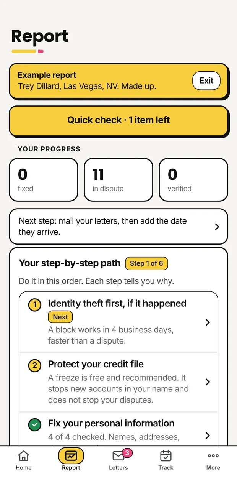
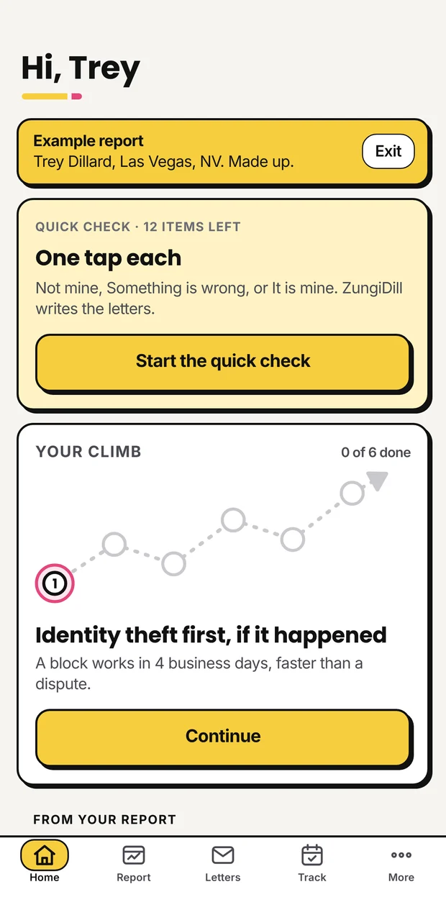
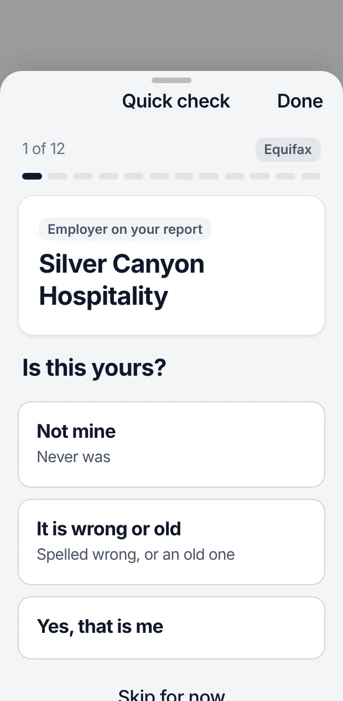
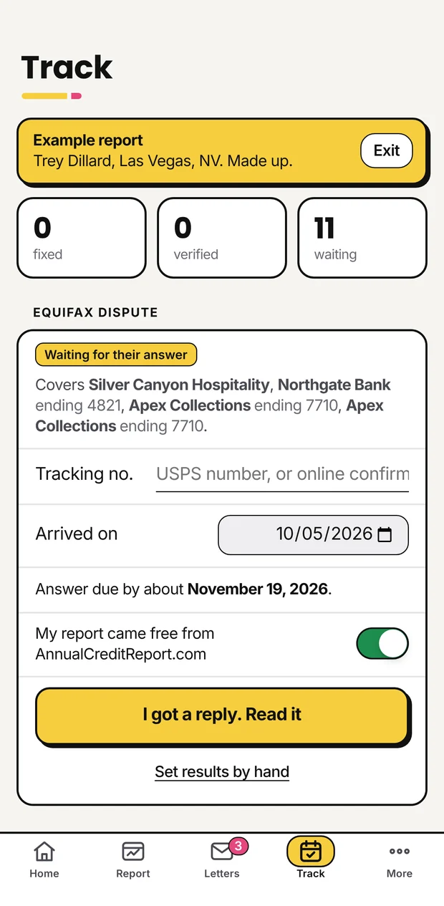

First
Bring in your report
Get your free report and open it in ZungiDill. A photo of a paper copy works too.
You work hard and pay your way, a lot of times in cash. Still the answer is no, or yes with a payment that hurts. Sometimes what holds you back is a mistake on your credit report. ZungiDill helps you find it and fix it yourself.

Next year it is another used car with the same high note. ZungiDill shows you what the lender sees, so you walk in knowing your file.
You never saw what they sent. With ZungiDill you read every letter before it goes out, and you send it yourself.
Cash works until you need a lease, a car or a home. Your report follows you either way, so make sure it tells the truth.
Start with your free credit report. ZungiDill reads it with you and shows you what to look at first.
No forms to figure out and no calls to make. You stay in charge the whole way.

First
Get your free report and open it in ZungiDill. A photo of a paper copy works too.

Next
Not mine. I don't know this one. Something is off. Your taps become the letter.

Then
Add the day it arrived. ZungiDill reminds you when they owe you an answer and helps you read it.
How long does it take? The credit bureaus usually have about 30 days to answer each letter. Start now, so it can be done before you apply for the car, the place or the card.
No. Nobody does it for you, and nobody charges you every month for promises. ZungiDill is a tool you use yourself. You decide what is wrong and you send your own letters.
Free at AnnualCreditReport.com, the official site. Save it as a PDF and open it in ZungiDill. The Support page walks you through it.
Checking your report and drafting letters is free. You pay only when a letter is ready to print, save or send, one at a time or with a monthly plan. You see the price before you pay. See prices
No. ZungiDill is for your own credit report only. A report in another name is stopped and not used.
ZungiDill will not tell you to call it wrong. It shows you what you can do instead, like a goodwill letter asking a lender to remove a late payment that really happened.
Stuck or not sure where to start? Reach out. A person reads every message and replies within two business days.
Please do not send your Social Security number, full account numbers or your credit report.
Leave your email and we will write once, when the iPhone app is out. Privacy
Email me when it is out